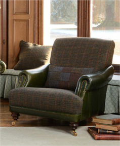

Tetrad
Tetrad 和 Harris Tweed是天作之合，至少在英国是这样的。 Tetrad 和 Harris Tweed具有高品质、独特的风格并有一定的传承价值，他们一起为客户提供超级舒适的沙发、椅子。许多很有名气的设计师及有远见的客户都会选择Harris Tweed的布料。传统的哈里斯粗花呢在许多高品质的品牌中出现。Tetrad推出一系列Harris Tweed风格的沙发和椅子，舒适度、品质符合我们对家具的期待。我们保证您所购买的Tetrad 和 Harris Tweed是最好的，绝对是英国制造，百分之百的英国血统。Tetred沙发将传统手工艺与最好的材料完美结合，布艺、皮艺和毛呢材料的运用，舒适怀旧甚至俏皮的英伦气质是特色。在光滑无暇的牛皮做彩色印花，题材丰富。
Tetrad产品完美地展现了我们的工艺及品质，其毋庸置疑的时尚样式完全是由我们的专家团队手工打造出来的，他们确保每一件产品都是时尚与质量的完美融合。我们知道家具对于您来说不仅只有使用价值，也是您家里特色的集中体现。我们的设计师团队不遗余力的创作新的风格和样式来满足大家的品味。所有的Tetrad沙发、椅子及脚踏都采用极高标准的耐用的硬木框架、多样的支撑物、高品质的面料及填充物，这些都让您在好的品质下有更多的选择。
